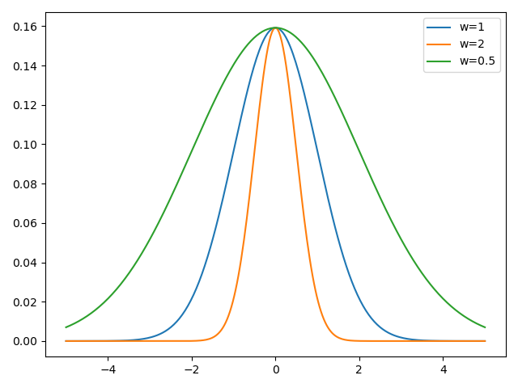

Attention Pooling: Nadaraya-Watson Kernel Regression
NW Kernel Regression
现有样本，对于变量，想估计，如果直接通过数据推导的值，其实就可以用变量与样本接近程度产生一个权重，对加权。
这么说比较抽象，核心思想是如果假设样本是从光滑曲线上采样得到，那么就可以认为越接近0则的参考意义越大。时用一个核函数生成权重，则可建立这个通用模型： 当然，其实不乘以得到的就是权重，显然对于所有算出的权重加和等于1。
正常的NW核回归计算权重时一般不用全部，而是用滑动窗口，毕竟全都计算成本太高。为了描述起来简单，这里不考虑滑动窗口。
我们启发式地认为越接近于0越好，正态分布的钟形曲线刚好符合随机变量越接近0值越大的特点，使用该钟形曲线生成权重估计是很符合直觉的（但我认为NM核回归直接做加权对于很多分布来说都是有偏的，比如对于正弦曲线这样的波动函数来讲会导致估计的值偏向0，毕竟均值会减小方差）。因此核函数使用： 代入到最上面的公式(1)后，约掉常数项可以得到 本质上就是使用偏差平方相反数的softmax作为权重，偏差越小权重越大。
我们可以加一个缩放系数，乘在上，得到：
这本质上相当于高斯核的变成，可以看出越大，钟形曲线越陡峭，约注重局部信息；相反越小则越看重全局信息。

NW Kernel Regression to Attention
用query()，从keys()查询value()，就可以得到attention并估计了。
import pylab
def softmax(arr):
exp = pylab.exp(arr)
return exp / exp.sum()
x_i = pylab.sort(pylab.rand(50) * 6)
y_true = pylab.sin(x_i) + x_i / 3 # y=sin(x)+x/3
y_i = y_true + (pylab.rand(*y_true.shape) - pylab.rand(*y_true.shape)) * 0.5
def predict(x, w=1):
attention = softmax(-1 / 2 * ((x - x_i) * w) ** 2)
y = sum(attention * y_i)
return y
x_test = pylab.linspace(0, 6, 50)
pylab.scatter(x_i, y_i, color='black', alpha=0.1, label='y_true')
pylab.plot(x_i, y_true, 'k-', lw=.3)
for w in (1, 3, 10):
y_pred = [predict(x, w=w) for x in x_test]
pylab.plot(x_test, y_pred, label=f"{w=}")
pylab.legend()
pylab.tight_layout()
pylab.show()